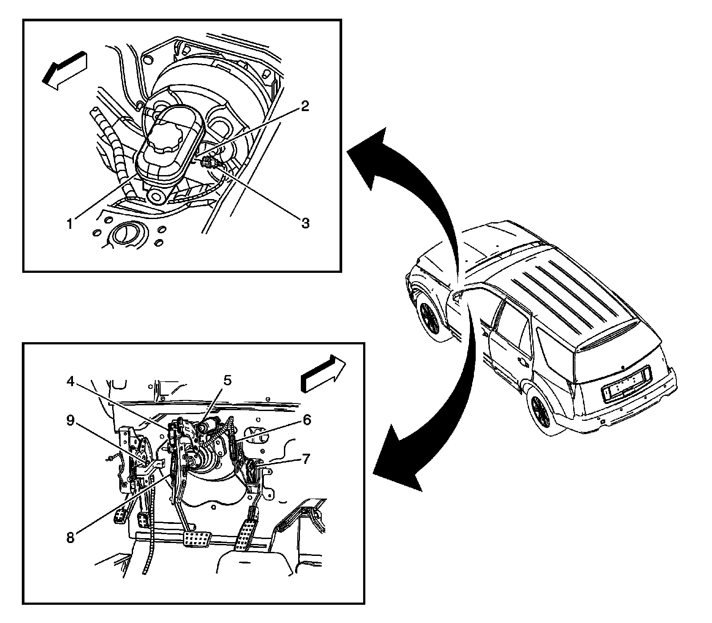
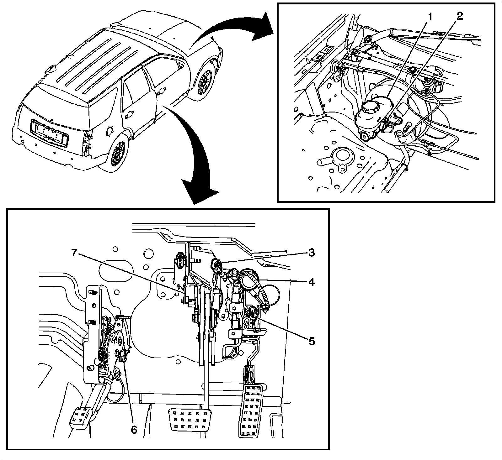

Brake Fluid Level Sensor/Switch: Locations
Front of Vehicle/Engine Compartment Component Views
Front Engine Compartment - LHD

1 - Brake Fluid Pressure Sensor
2 - Electronic Brake Control Module (EBCM)
3 - Brake Pressure Modulator Valve (BPMV)
4 - Inflatable Restraint Front End Sensor - Right
5 - Transmission Control Module (LY7 - Gas, 6 Cylinder, 3.6L, SFI, V6)
6 - Fuse Block-Underhood
7 - Engine Control Module (ECM)
8 - Battery
9 - Battery Current Sensor
10 - Windshield Wiper Motor
11 - Brake Fluid Level Switch
12 - Hood Ajar Switch (UA6)
13 - Inflatable Restraint Front End Sensor - Left
14 - Horns
15 - Engine Control Module (ECM) (LH2 - Gas, 8 Cylinder, 4.6L, SFI, V8, DOHC, HO)
16 - Horn - Center (UO3)
17 - Air Quality Sensor (AQS) (K14)
18 - Ambient Air Temperature Sensor
19 - Hood Latch Assembly
Front Engine Compartment - RHD

1 - Brake Fluid Pressure Sensor
2 - Electronic Brake Control Module (EBCM)
3 - Brake Pressure Modulator Valve (BPMV)
4 - Inflatable Restraint Front End Sensor - Right
5 - Fuse Block-Underhood
6 - Transmission Control Module (LY7 - Gas, 6 Cylinder, 3.6L, SFI, V6)
7 - Engine Control Module (ECM)
8 - Battery
9 - Battery Current Sensor
10 - Windshield Wiper Motor
11 - Brake Fluid Level Switch
12 - Hood Ajar Switch (UA6)
13 - Inflatable Restraint Front End Sensor - Left
14 - Horns
15 - Engine Control Module (ECM) (LH2 - Gas, 8 Cylinder, 4.6L, SFI, V8, DOHC, HO)
16 - Horn - Center (UO3)
17 - Air Quality Sensor (AQS) (K14)
18 - Ambient Air Temperature Sensor
19 - Hood Latch Assembly
Instrument Panel/Center Console Component Views
Park Brake, Brake Fluid Level Switches and Pedal Position Sensors (LHD)
Brake And Brake Fluid Level Switches:

1 - Brake Fluid Reservoir
2 - Brake Fluid Level Switch
3 - Brake Fluid Level Switch Connector
4 - Adjustable Brake Pedal Position Sensor Connector (JF4)
5 - Adjust Pedal Motor (JF4)
6 - Adjustable Accelerator Pedal Position Sensor (JF4)
7 - Accelerator Pedal Position (APP) Sensor (JF4)
8 - Adjustable Brake Pedal Position Sensor (JF4)
9 - Park Brake Switch
Park Brake, Brake Fluid Level Switches and Pedal Position Sensors (RHD)
Hydraulic Brake Components:

1 - Brake Fluid Reservoir
2 - Brake Fluid Level Switch
3 - Adjustable Accelerator Pedal Position Sensor (JF4)
4 - Adjustable Pedal Motor (JF4)
5 - Accelerator Pedal Position (APP) Sensor
6 - Park Brake Switch
7 - Adjustable Brake Pedal Position Sensor (JF4)